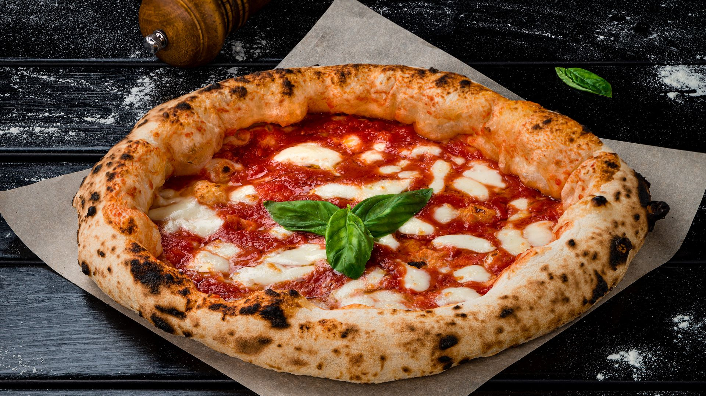

La pizza napolitana se originó en la ciudad de Nápoles, Italia, durante el siglo XVIII, como un alimento callejero y económico para las clases trabajadoras mas humildes. Se caracteriza por su masa tierna y delgada con un borde alto e inflado (llamado cornicione), elaborada sin grasas ni aceites. Es considerada un icono mundial de la gastronomia italiana.

Ingredientes para la masa:
500g de harina de trigo
325ml de agua tibia
7g de levadura seca (o 20g de levadura fresca)
10g de sal
Ingredientes de armado:
400g de tomates San Marzano (enlatados o frescos), tambien puede usarse tomates peritas
250g de mozzarella de bufala
Aceite de oliva extra virgen
Sal al gusto
Hojas de albahaca fresca
Preparación:
En un recipiente grande, mezcla la harina con la sal.
Disuelve la levadura en el agua tibia y deja reposar unos minutos hasta que empieze a espumar.
Añade la mezcla de agua y levadura a la harina y mezcla hasta obtener una masa homogenea
Amasa durante unos 10 minutos hasta que la masa este suave y elastica
Coloca la masa un un recipiente ligeramente aceitado, cubrela con un paño humedo y deja fermentar en un lugar calido durante 1 hora, o hasta que haya duplicado su tamaño.
Precalienta el horno a la maxima temperatura posible (250-300°C)y coloca una piedra para pizza o una bandeja en el centro del horno para que se caliente.
Divide la masa fermentada en dos parte y forma dos bolas. Estira cada bola sobre una superficie ligeramente enharinada hasta obtener un circulo fino.
Coloca la masa estirada sobre papel de horno para facilitar el traslado al horno caliente.
Tritura los tomates y extiende una capa uniforme sobre la masa.
Desmenuza la mozzarella y distribuyela sobre la pizza.
Añade hojas de albahaca fresca y rocia con un poco de aceite de oliva.
Ornea la pizza durante 7 a 10 minutos, o hasta que los bordes esten dorados y la mozzarella burbujee.
Retira del horno y deja reposar unos minuto antes de cortar y servir.